01/ 03
一云多芯，支持所有主流国产 AI 芯片，通过统一软件层降低异构算力管理和业务适配复杂度。统一管理异构算力，覆盖数据管理、模型训练、推理与 MaaS 全流程。
了解智算云平台- 一云多芯
- 全流程 MaaS
- 智能运维
- 99%可用性
我们是谁：
中科达云以智算云平台为底座，通过 Token Hub 连接模型服务，再由 AutoDev 支撑 AI 应用开发，帮助企业降低异构算力管理与国产化迁移复杂度。
我们提供什么：
联系我们AI Stack产品体系
01/ 03
一云多芯，支持所有主流国产 AI 芯片，通过统一软件层降低异构算力管理和业务适配复杂度。统一管理异构算力，覆盖数据管理、模型训练、推理与 MaaS 全流程。
了解智算云平台

03/ 03
AutoDev 是新一代 AI 驱动开发工具。理解你的项目上下文，从自然语言需求到完整可运行代码，从智能调试到自动化部署。
了解 AutoDevCAPABILITIES平台能力
统一纳管不同国产 GPU / AI 芯片、集群和资源池。

服务模型训练、微调、推理与应用开发的数据生命周期。
支持单机、多卡及分布式训练。
支持在线推理、批量推理、弹性服务与推理优化。

通过 Token Hub / MaaS 将多个模型以统一 API 方式提供给企业应用。

通过 AutoDev 支持从自然语言需求到代码生成、审查、调试与自动部署。
核心优势
从多芯统一、平滑迁移到智能运维，让国产算力真正进入企业级生产环境。
业务不再绑定芯片。
让每一份算力发挥更大价值
通过资源管理、调度和软件优化降低综合算力成本。
从硬件到软件，构建自主可控技术底座
保障企业 AI 基础设施和业务连续性。
让复杂基础设施稳定运行
降低运维复杂度，提升稳定性并保障 SLA。
不只是平台，更懂行业 AI 落地
依托中科体系专家资源和领域知识提供技术支持。
解决方案
围绕国产算力优化、数据资产治理与 MaaS 平台建设，提供可落地的企业级解决方案。
开放生态
连接芯片、框架、模型与应用，让企业可以在开放、中立的技术体系中持续构建 AI 能力。
中科达云不是单一芯片或单一模型平台，而是连接国产 AI 技术栈的基础设施层。
关于我们
依托中科体系专家资源和领域知识，打造领先的全面、智能 AI 基础设施平台。
专家资源
底层技术
行业知识
持续创新